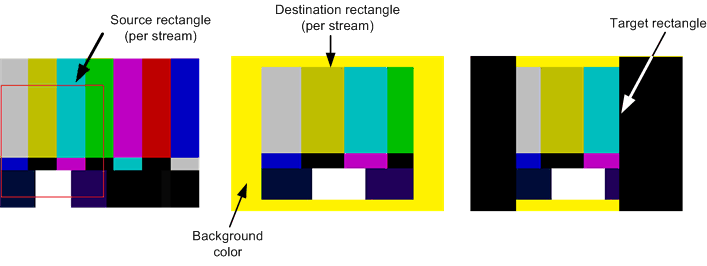

DXVA video processing encapsulates the functions of the graphics hardware that are devoted to processing uncompressed video images. Video processing services include deinterlacing and video mixing.
This topic contains the following sections:
Graphics hardware can use the graphics processing unit (GPU) to process uncompressed video images. A video processing device is a software component that encapsulates these functions. Applications can use a video processing device to perform functions such as:
The following diagram shows the stages in the video processing pipeline. The diagram is not meant to show an actual implementation. For example, the graphics driver might combine several stages into a single operation. All of these operations can be performed in a single call to the video processing device. Some stages shown here, such as noise and detail filtering, might not be supported by the driver.
The input to the video processing pipeline always includes a primary video stream, which contains the main image data. The primary video stream determines the frame rate for the output video. Each frame of the output video is calculated relative to the input data from the primary video stream. Pixels in the primary stream are always opaque, with no per-pixel alpha data. The primary video stream can be progressive or interlaced.
Optionally, the video processing pipeline can receive up to 15 video substreams. A substream contains auxiliary image data, such as closed captions or DVD subpictures. These images are displayed over the primary video stream, and are generally not meant to be shown by themselves. Substream pictures can contain per-pixel alpha data, and are always progressive frames. The video processing device alpha-blends the substream images with the current deinterlaced frame from the primary video stream.
In the remainder of this topic, the term picture is used for the input data to a video processing device. A picture might consist of a progressive frame, a single field, or two interleaved fields. The output is always a deinterlaced frame.
A video driver can implement more than one video processing device, to provide different sets of video processing capabilities. Devices are identified by GUID. The following GUIDs are predefined:
Every graphics driver that supports DXVA video processing must implement at least these two devices. The graphics driver may also provide other devices, which are identified by driver-specific GUIDs. For example, a driver might implement a proprietary deinterlacing algorithm that produces better quality output than bob deinterlacing. Some deinterlacing algorithms may require forward or backward reference pictures from the primary stream. If so, the caller must provide these pictures to the driver in the correct sequence, as described later in this section.
A reference software device is also provided. The software device is optimized for quality rather than speed, and may not be adequate for real-time video processing. The reference software device uses the GUID value DXVA2_VideoProcSoftwareDevice.
Before using DXVA video processing, the application must create a video processing device. Here is a brief outline of the steps, which are explained in greater detail in the remainder of this section:
Sometimes you can omit some of these steps. For example, instead of getting the list of render-target formats, you could simply try creating the video processing device with your preferred format, and see if it succeeds. A common format such as D3DFMT_X8R8G8B8 is likely to succeed.
The remainder of this section describes these steps in detail.
The IDirectXVideoProcessorService interface is obtained from the Direct3D device. There are two ways to get a pointer to this interface:
If you have a pointer to a Direct3D device, you can get an IDirectXVideoProcessorService pointer by calling the DXVA2CreateVideoService function. Pass in a pointer to the device's IDirect3DDevice9 interface, and specify IID_IDirectXVideoProcessorService for the riid parameter, as shown in the following code:
// Create the DXVA-2 Video Processor service.
hr = DXVA2CreateVideoService(g_pD3DD9, IID_PPV_ARGS(&g_pDXVAVPS));
n some cases, one object creates the Direct3D device and then shares it with other objects through the Direct3D Device Manager. In this situation, you can call IDirect3DDeviceManager9::GetVideoService on the device manager to get the IDirectXVideoProcessorService pointer, as shown in the following code:
HRESULT GetVideoProcessorService(
IDirect3DDeviceManager9 *pDeviceManager,
IDirectXVideoProcessorService **ppVPService
)
{
*ppVPService = NULL;
HANDLE hDevice;
HRESULT hr = pDeviceManager->OpenDeviceHandle(&hDevice);
if (SUCCEEDED(hr))
{
// Get the video processor service
HRESULT hr2 = pDeviceManager->GetVideoService(
hDevice,
IID_PPV_ARGS(ppVPService)
);
// Close the device handle.
hr = pDeviceManager->CloseDeviceHandle(hDevice);
if (FAILED(hr2))
{
hr = hr2;
}
}
if (FAILED(hr))
{
SafeRelease(ppVPService);
}
return hr;
}
To get a list of video processing devices, fill in a DXVA2_VideoDesc structure with the format of the primary video stream, and pass this structure to the IDirectXVideoProcessorService::GetVideoProcessorDeviceGuids method. The method returns an array of GUIDs, one for each video processing device that can be used with this video format.
Consider an application that renders a video stream in YUY2 format, using the BT.709 definition of YUV color, with a frame rate of 29.97 frames per second. Assume that the video content consists entirely of progressive frames. The following code fragment shows how to fill in the format description and get the device GUIDs:
// Initialize the video descriptor.
g_VideoDesc.SampleWidth = VIDEO_MAIN_WIDTH;
g_VideoDesc.SampleHeight = VIDEO_MAIN_HEIGHT;
g_VideoDesc.SampleFormat.VideoChromaSubsampling = DXVA2_VideoChromaSubsampling_MPEG2;
g_VideoDesc.SampleFormat.NominalRange = DXVA2_NominalRange_16_235;
g_VideoDesc.SampleFormat.VideoTransferMatrix = EX_COLOR_INFO[g_ExColorInfo][0];
g_VideoDesc.SampleFormat.VideoLighting = DXVA2_VideoLighting_dim;
g_VideoDesc.SampleFormat.VideoPrimaries = DXVA2_VideoPrimaries_BT709;
g_VideoDesc.SampleFormat.VideoTransferFunction = DXVA2_VideoTransFunc_709;
g_VideoDesc.SampleFormat.SampleFormat = DXVA2_SampleProgressiveFrame;
g_VideoDesc.Format = VIDEO_MAIN_FORMAT;
g_VideoDesc.InputSampleFreq.Numerator = VIDEO_FPS;
g_VideoDesc.InputSampleFreq.Denominator = 1;
g_VideoDesc.OutputFrameFreq.Numerator = VIDEO_FPS;
g_VideoDesc.OutputFrameFreq.Denominator = 1;
// Query the video processor GUID.
UINT count;
GUID* guids = NULL;
hr = g_pDXVAVPS->GetVideoProcessorDeviceGuids(&g_VideoDesc, &count, &guids);
The code for this example is taken from the DXVA2_VideoProc SDK sample.
The pGuids array in this example is allocated by the GetVideoProcessorDeviceGuids method, so the application must free the array by calling CoTaskMemFree. The remaining steps can be performed using any of the device GUIDs returned by this method.
To get the list of render-target formats supported by the device, pass the device GUID and the DXVA2_VideoDesc structure to the IDirectXVideoProcessorService::GetVideoProcessorRenderTargets method, as shown in the following code:
// Query the supported render-target formats.
UINT i, count;
D3DFORMAT* formats = NULL;
HRESULT hr = g_pDXVAVPS->GetVideoProcessorRenderTargets(
guid, &g_VideoDesc, &count, &formats);
if (FAILED(hr))
{
DBGMSG((L"GetVideoProcessorRenderTargets failed: 0x%x.\n", hr));
return FALSE;
}
for (i = 0; i < count; i++)
{
if (formats[i] == VIDEO_RENDER_TARGET_FORMAT)
{
break;
}
}
CoTaskMemFree(formats);
if (i >= count)
{
DBGMSG((L"The device does not support the render-target format.\n"));
return FALSE;
}
The method returns an array of D3DFORMAT values. In this example, where the input type is YUY2, a typical list of formats might be D3DFMT_X8R8G8B8 (32-bit RGB) and D3DMFT_YUY2 (the input format). However, the exact list will depend on the driver.
The list of available formats for the substreams can vary depending on the render-target format and the input format. To get the list of substream formats, pass the device GUID, the format structure, and the render-target format to the IDirectXVideoProcessorService::GetVideoProcessorSubStreamFormats method, as shown in the following code:
// Query the supported substream formats.
formats = NULL;
hr = g_pDXVAVPS->GetVideoProcessorSubStreamFormats(
guid, &g_VideoDesc, VIDEO_RENDER_TARGET_FORMAT, &count, &formats);
if (FAILED(hr))
{
DBGMSG((L"GetVideoProcessorSubStreamFormats failed: 0x%x.\n", hr));
return FALSE;
}
for (i = 0; i < count; i++)
{
if (formats[i] == VIDEO_SUB_FORMAT)
{
break;
}
}
CoTaskMemFree(formats);
if (i >= count)
{
DBGMSG((L"The device does not support the substream format.\n"));
return FALSE;
}
This method returns another array of D3DFORMAT values. Typical substream formats are AYUV and AI44.
To get the capabilities of a particular device, pass the device GUID, the format structure, and a render-target format to the IDirectXVideoProcessorService::GetVideoProcessorCaps method. The method fills in a DXVA2_VideoProcessorCaps structure with the device capabilities.
// Query video processor capabilities.
hr = g_pDXVAVPS->GetVideoProcessorCaps(
guid, &g_VideoDesc, VIDEO_RENDER_TARGET_FORMAT, &g_VPCaps);
if (FAILED(hr))
{
DBGMSG((L"GetVideoProcessorCaps failed: 0x%x.\n", hr));
return FALSE;
}
To create the video processing device, call IDirectXVideoProcessorService::CreateVideoProcessor. The input to this method is the device GUID, the format description, the render-target format, and the maximum number of substreams that you plan to mix. The method returns a pointer to the IDirectXVideoProcessor interface, which represents the video processing device.
// Finally create a video processor device.
hr = g_pDXVAVPS->CreateVideoProcessor(
guid,
&g_VideoDesc,
VIDEO_RENDER_TARGET_FORMAT,
SUB_STREAM_COUNT,
&g_pDXVAVPD
);
The main video processing operation is the video processing blit. (A blit is any operation that combines two or more bitmaps into a single bitmap. A video processing blit combines input pictures to create an output frame.) To perform a video processing blit, call IDirectXVideoProcessor::VideoProcessBlt. This method passes a set of video samples to the video processing device. In response, the video processing device processes the input pictures and generates one output frame. Processing can include deinterlacing, color-space conversion, and substream mixing. The output is written to a destination surface provided by the caller.
The VideoProcessBlt method takes the following parameters:
In the pSamples array, the caller must provide the following input samples:
The driver expects this array to be in a particular order, as described in Input Sample Order.
The DXVA2_VideoProcessBltParams structure contains general parameters for the blit. The most important parameters are stored in the following members of the structure:
TargetFrame is the presentation time of the output frame. For progressive content, this time must equal the start time for the current frame from the primary video stream. This time is specified in the Start member of the DXVA2_VideoSample structure for that input sample.
For interlaced content, a frame with two interleaved fields produces two deinterlaced output frames. On the first output frame, the presentation time must equal the start time of the current picture in the primary video stream, just like progressive content. On the second output frame, the start time must equal the midpoint between the start time of the current picture in the primary video stream and the start time of the next picture in the stream. For example, if the input video is 25 frames per second (50 fields per second), the output frames will have the time stamps shown in the following table. Time stamps are shown in units of 100 nanoseconds.
| Input picture | TargetFrame (1) | TargetFrame (2) |
|---|---|---|
| 0 | 0 | 200000 |
| 400000 | 0 | 600000 |
| 800000 | 800000 | 1000000 |
| 1200000 | 1200000 | 1400000 |
Â
If interlaced content consists of single fields rather than interleaved fields, the output times always match the input times, as with progressive content.
TargetRect defines a rectangular region within the destination surface. The blit will write the output to this region. Specifically, every pixel inside TargetRect will be modified, and no pixels outside of TargetRect will be modified. The target rectangle defines the bounding rectangle for all of the input video streams. Placement of individual streams within that rectangle is controlled through the pSamples parameter of IDirectXVideoProcessor::VideoProcessBlt.
BackgroundColor gives the color of the background wherever no video image appears. For example, when a 16 x 9 video image is displayed within a 4 x 3 area (letterboxing), the letterboxed regions are displayed with the background color. The background color applies only within the target rectangle (TargetRect). Any pixels outside of TargetRect are not modified.
DestFormat describes the color space for the output video—for example, whether ITU-R BT.709 or BT.601 color is used. This information can affect how the image is displayed. For more information, see Extended Color Information.
Other parameters are described on the reference page for the DXVA2_VideoProcessBltParams structure.
The pSamples parameter of IDirectXVideoProcessor::VideoProcessBlt points to an array of DXVA2_VideoSample structures. Each of these structures contains information about one input sample and a pointer to the Direct3D surface that contains the sample. Each sample is one of the following:
The exact order in which the samples must appear in the array is described later, in the section Input Sample Order.
Up to 15 substream pictures can be provided, although most video applications need only one substream, at the most. The number of substreams can change with each call to VideoProcessBlt. Substream pictures are indicated by setting the SampleFormat.SampleFormat member of the DXVA2_VideoSample structure equal to DXVA2_SampleSubStream. For the primary video stream, this member describes the interlacing of the input video. For more information, see DXVA2_SampleFormat enumeration.
For the primary video stream, the Start and End members of the DXVA2_VideoSample structure give the start and end times of the input sample. For substream pictures, set these values to zero, because the presentation time is always calculated from the primary stream. The application is responsible for tracking when each substream picture should be presented and submitting it to VideoProcessBlt at the proper time.
Two rectangles define how the source video is positioned for each stream:
The driver blits pixels from the source rectangle into the destination rectangle. The two rectangles can have different sizes or aspect ratios; the driver will scale the image as needed. Moreover, each input stream can use a different scaling factor. In fact, scaling might be necessary to produce the correct aspect ratio in the output frame. The driver does not take the source's pixel aspect ratio into account, so if the source image uses non-square pixels, it is up to the application to calculate the correct destination rectangle.
The preferred substream formats are AYUV and AI44. The latter is a palletized format with 16 colors. Palette entries are specified in the Pal member of the DXVA2_VideoSample structure. (If your source video format is originally expressed as a Media Foundation media type, the palette entries are stored in the MF_MT_PALETTE attribute.) For non-palletized formats, clear this array to zero.
Every blit operation is defined by the following three rectangles:
The target and destination rectangles are specified relative to the destination surface. The source rectangle is specified relative to the source image. All rectangles are specified in pixels.

The video processing device alpha blends the input pictures, using any of the following sources of alpha data:
This section gives a series of examples that show how the video processing device creates the output image.
This example shows how to letterbox the source image, by setting the destination rectangle to be smaller than the target rectangle. The primary video stream in this example is a 720 × 480 image, and is meant to be displayed at a 16:9 aspect ratio. The destination surface is 640 × 480 pixels (4:3 aspect ratio). To achieve the correct aspect ratio, the destination rectangle must be 640 × 360. For simplicity, this example does not include a substream. The following diagram shows the source and destination rectangles.
The preceding diagram shows the following rectangles:
Target rectangle: { 0, 0, 640, 480 }
Primary video:
The driver will deinterlace the video, shrink the deinterlaced frame to 640 × 360, and blit the frame into the destination rectangle. The target rectangle is larger than the destination rectangle, so the driver will use the background color to fill the horizontal bars above and below the frame. The background color is specified in the DXVA2_VideoProcessBltParams structure.
Substream pictures can extend beyond the primary video picture. In DVD video, for example, the primary video stream can have a 4:3 aspect ratio while the substream is 16:9. In this example, both video streams have the same source dimensions (720 × 480), but the substream is intended to be shown at a 16:9 aspect ratio. To achieve this aspect ratio, the substream image is stretched horizontally. The source and destination rectangles are shown in the following diagram.
The preceding diagram shows the following rectangles:
Target rectangle: { 0, 0, 854, 480 }
Primary video:
Substream:
These values preserve the image height and scale both images horizontally. In the regions where both images appear, they are alpha blended. Where the substream picture extends beyond the primay video, the substream is alpha blended with the background color. This alpha blending accounts for the altered colors in the right-hand side of the diagram.
In the previous example, the substream and the primary stream are the same height. Streams can also have mismatched heights, as shown in this example. Areas within the target rectangle where no video appears are drawn using the background color—black in this example. The source and destination rectangles are shown in the following diagram.
The preceding diagram shows the following rectangles:
This example shows a case where the target rectangle is smaller than the destination surface.
The preceding diagram shows the following rectangles:
Pixels outside of the target rectangle are not modified, so the background color appears only within the target rectangle. The dotted area indicates portions of the destination surface that are not affected by the blit.
If you specify a source rectangle that is smaller than the source picture, the driver will blit just that portion of the picture. In this example, the source rectangles specify the lower-right quadrant of the primary video stream and the lower-left quadrant of the substream (indicated by hash marks in the diagram). The destination rectangles are the same sizes as the source rectangles, so the video is not stretched. The source and destination rectangles are shown in the following diagram.
The preceding diagram shows the following rectangles:
This example is similar to previous one, but the destination rectangles intersect. The surface dimensions are the same as in the previous example, but the source and destination rectangles are not. Again, the video is cropped but not stretched. The source and destination rectangles are shown in the following diagram.

The preceding diagram shows the following rectangles:
In this example, the video is stretched as well as cropped. A 180 × 120 region from each stream is stretched to cover a 360 × 240 area in the destination rectangle.
The preceding diagram shows the following rectangles:
The pSamples parameter of the VideoProcessBlt method is a pointer to an array of input samples. Samples from the primary video stream appear first, followed by substream pictures in Z-order. Samples must be placed into the array in the following order:
At any time, the primary video stream can switch between interlaced and progressive content, and the number of substreams can change.
The SampleFormat.SampleFormat member of the DXVA2_VideoSample structure indicates the type of picture. For substream pictures, set this value to DXVA2_SampleSubStream. For progressive pictures, the value is DXVA2_SampleProgressiveFrame. For interlaced pictures, the value depends on the field layout.
If the driver requires forward and backward reference samples, the full number of samples might not be available at the start of the video sequence. In that case, include entries for them in the pSamples array, but mark the missing samples as having type DXVA2_SampleUnknown.
The Start and End members of the DXVA2_VideoSample structure give the temporal location of each sample. These values are used only for samples from the primary video stream. For substream pictures, set both members to zero.
The following examples may help to clarify these requirements.
The simplest case occurs when there are no substreams and the deinterlacing algorithm does not require reference samples (NumForwardRefSamples and NumBackwardRefSamples are both zero). Bob deinterlacing is an example of such an algorithm. In this case, the pSamples array should contain a single input surface, as shown in the following table.
| Index | Surface type | Temporal location |
|---|---|---|
| pSamples[0] | Interlaced picture. | T |
Â
The time value T is assumed to be the start time of the current video frame.
In this example, the application mixes two substreams with the primary stream. The deinterlacing algorithm does not require reference samples. The following table shows how these samples are arranged in the pSamples array.
| Index | Surface type | Temporal location | Z-order |
|---|---|---|---|
| pSamples[0] | Interlaced picture | T | 0 |
| pSamples[1] | Substream | 0 | 1 |
| pSamples[2] | Substream | 0 | 2 |
Â
Now suppose that the deinterlacing algorithm requires one backward reference sample and one forward reference sample. In addition, two substream pictures are provided, for a total of five surfaces. The correct ordering is shown in the following table.
| Index | Surface type | Temporal location | Z-order |
|---|---|---|---|
| pSamples[0] | Interlaced picture (reference) | T −1 | Not applicable |
| pSamples[1] | Interlaced picture | T | 0 |
| pSamples[2] | Interlaced picture (reference) | T +1 | Not applicable |
| pSamples[3] | Substream | 0 | 1 |
| pSamples[4] | Substream | 0 | 2 |
Â
The time T −1 is the start time of the frame before the current frame, and T +1 is the start time of the following frame.
If the video stream switches to progressive content, using the same deinterlacing mode, the application must provide the same number of samples, as shown in the following table.
| Index | Surface type | Temporal location | Z-order |
|---|---|---|---|
| pSamples[0] | Progressive picture (reference) | T −1 | Not applicable |
| pSamples[1] | Progressive picture | T | 0 |
| pSamples[2] | Progressive picture (reference) | T +1 | Not applicable |
| pSamples[3] | Substream | 0 | 1 |
| pSamples[4] | Substream | 0 | 2 |
Â
At the start of a video sequence, forward and backward reference samples might not be available. When this happens, entries for the missing samples are included in the pSamples array, with sample type DXVA2_SampleUnknown.
Assuming that the deinterlacing mode needs one forward and one backward reference sample, the first three calls to VideoProcessBlt would have the sequences of inputs shown in the following three tables.
| Index | Surface type | Temporal location |
|---|---|---|
| pSamples[0] | Unknown | 0 |
| pSamples[1] | Unknown | 0 |
| pSamples[2] | Interlaced picture (reference) | T +1 |
Â
| Index | Surface type | Temporal location |
|---|---|---|
| pSamples[0] | Unknown | 0 |
| pSamples[1] | Interlaced picture | T |
| pSamples[2] | Interlaced picture (reference) | T +1 |
Â
| Index | Surface type | Temporal location |
|---|---|---|
| pSamples[0] | Interlaced picture | T −1 |
| pSamples[1] | Interlaced picture | T |
| pSamples[2] | Interlaced picture (reference) | T +1 |
Â
DirectX Video Acceleration 2.0
Â
Â